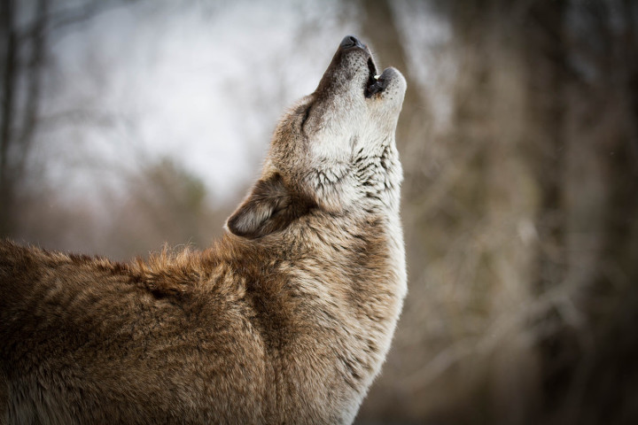

이에 대한 근거와 이유에 대해 알아보고 개의 기원과 역사에 대해서도 알아보겠습니다.
다소 중복되는 내용도 있습니다.
늑대와 개의 유전자는 99% 이상의 높은 확률로 일치하며, 이종교배로 개와 늑대 사이에 태
어난 '늑대개' 또한 번식 능력이 있다. 한편에서는 늑대가 개의 선조라기보다는 아주 가까
운 친척 관계라는 설도 있다.
아시아 전역에서 유럽에 이르기까지 수천 년에 걸쳐 확산된 개는 각지의 늑대와 교배되었
고, 이 때문에 다양한 견종이 탄생될 수 있었던 것으로 추정되고 있다.
1만 2,000년 전의 이스라엘 유적에서는 인간과 함께 매장된 개의 뼈가 발견되었다. 수렵생
활을 하던 시기, 인류가 먹고 남긴 음식을 먹으려고 늑대가 인간의 무리로 접근하게 되었
고, 짖어서 위험을 알리고 사냥에 도움이 된다는 사실을 깨달은 인간은 늑대의 새끼를 키우
기 시작했다.
순하고 사람을 잘 따르는 순종적인 성질을 가진 늑대를 골라 번식시키고 기르는 과정에서
현재의 개가 만들어질 수 있었다. 그 후 각지에서 개의 품종개량이 이루어져 용도에 적합한
다양한 견종이 만들어지게 되었다.
한편에서는 어느 특정 동물이 개로 진화한 것이 아니라 늑대나 자칼, 야생개 등 다양한 동
물의 복잡한 교배로 태어난 동물을 인간이 키우기 시작하면서 현재의 개로 진화했다는 설
도 있다. 하지만 이 설은 아직 추측 단계에 불과하다.
참고로 오스트레일리아 들개 '딩고(dingo)'는 동남아시아에서 유입된 개가 야생화한 것으
로, 야생개의 직계 후손은 아니다. 개의 선조를 거슬러 올라가보면 '미아키스(Miacis)'라는
동물과 만날 수 있다. 미아키스는 지금의 갯과, 고양이과, 족제비과, 곰과 등 식육목에 해당
하는 동물의 공통된 조상이라 여겨진다.
이것을 바탕으로 생각하면 개나 고양이의 선조는 같은 동물이라고 할 수 있다. 몸길이가
20~30cm 정도 되는 미아키스는 약 6,500만 년 전 유럽 대륙과 북미 대륙의 삼림지대에서
지상 생활을 해왔던 육식동물로, 쥐와 같은 작은 동물을 먹고 살았다. 이후 미아키스는 초
원에서 집단으로 행동하며 커다란 동물을 사냥하던 개의 선조와 삼림에 여전히 남아 있던
고양이의 선조로 나뉘게 된다.
개의 선조가 되었던 미아키스 무리 안에서는 자연스레 리더가 생겨났고, 그에 따라 서열도
정해지게 되어 무리 속에 질서도 만들어졌다. 그 후 일부의 미아키스는 자칼, 여우, 너구리
등 개속(屬)에 해당하는 동물들의 선조인 '토마르크투스(Tomarctus)'로 진화하게 되고 이
토마르크투스가 늑대의 직계 조상이라 일컬어지고 있다.
당시의 늑대는 육지와 이어져 있던 베링해협(북아메리카 대륙의 알래스카와 유라시아 대륙
의 시베리아 사이에 있는 해협_옮긴이)을 건너 아시아까지 진출했다.
그 후 앞서 설명한 것 같은 과정을 거쳐 늑대에서 진화한 개는 인간의 생활에서 없어서는
안 되는 동료가 되었다. 인간의 가장 좋은 친구인 개. 만약 인간이 개와 만나지 못했다면 인
간의 생활은 지금과는 전혀 다른 모습이었을지도 모른다.

개의 가장 유력한 조상후보는 늑대로, 본래 다양한 아종 및 지역에 따른 변종들을 유럽 전
역, 아시아, 북아메리카에서 볼 수 있었다. 이 동물은 색깔이 매우 다양하여, 심지어는 한 무
리 안에서도 각각의 늑대를 쉽게 구별할 수 있다.
보통 북부 늑대가 남부 늑대보다 훨씬 큰데, 개는 체구가 약간 작은 중부 또는 남부 늑대 품
종에서 유래한 것 같다. 개의 또다른 조상 후보는 재칼로 본래 아프리카 동물이었으며, 메
소포타미아, 남동부 유럽, 인도에까지 퍼져 살았다.
재칼은 개보다 사회성이 덜한 동물로, 여우처럼 좁은 머리를 가진 점은 재칼이 개의 조상이
아닐 것으로 생각되게 하는 요소이다.
그리하여 인간과 개의 관계는 점차 발전하게 되었고, 그중 유순하고 다루기 쉬운 개는 인간
생활에 적응하고, 그렇지 못한 개는 달아나거나 살해되었을 것이다. 인간은 개에게 먹이와
안식처를 주었고 개는 인간에게 다가오는 위험을 알려주었다.
이렇게 인간과 개는 서로 의존하며 성장해왔고, 이해관계와 애정의 결속은 인간이 형질
과 생김새를 선택하여 원하는 개를 창조하게 되었을 때까지 수세기에 걸쳐 점점 견고해졌다.
사람은 또 시간이 지나면서 번식에 더욱 관심을 기울여 다양한 품종을 만들어냈다.
길들인 개에게는 근연관계에 있는 다른 야생무리와 구별되는 몇 가지 형질이 갖추어졌다.
그 1가지 예가 위로 향한 꼬리로, 낫 모양에서부터 나선형에 이르기까지 다양하다.
선사시대가 지나면서 개를 아프리카 전지역에서 볼 수 있게 되었다.
그곳이 원산인 품종 가운데 하나가 아프리칸바센지로, 지금도 적도 부근의 피그미족이 이용하고 있다.
바센지는 적도생활에 적응한 초기 품종의 후손으로, 남아시아·동인도제도를 거쳐 오스트레일리아까지 퍼졌고,
그곳에서는 딩고가 되었다.
케임브리지대학교 키스 칼리지의 설립자인 존 키스가 16세기 박물학자 콘라드 본 게스너를 위하여 지은
영국 개에 대한 해설서를 보면, 이때 영국에는 적어도 6개의 주요품종이 있었다
(그레이하운드·트루하운드·버드독[bird dog]·테리어·마스티프·셰퍼드).
역사적 기록을 살펴보면 개는 품종간에 빈번히 교잡되어왔다.
따라서 대부분은 조상을 밝히기가 어렵다.
인간에 의한 교잡은 개의 유전적 변화에 한 부분을 맡아왔고, 새로운 자연 서식지로 들어간 동물이 빠른 변화와 분화를 겪듯이
개도 인간과 함께 새로운 생물학적 서식지로 들어가 인간이 지원하는 그와 유사한 빠른 진화를 경험했다.
개가 주인에 대해 충직하고 인내심이 있으며, 인간을 위해 헌신하는 것은 여러 이야기에 나온다.
옛날부터 개는 사냥, 가축지기, 맹인 안내, 경계, 짐 나르는 일과 같은 특별한 목적으로 번식되어 왔으며,
애완용으로 특히 인기가 있었다.
개와 인간의 밀접한 사회적 관계는 많은 관찰자들에게 인간사회의 부모와 자식 간의 관계처럼 비쳐져,
개는 자녀교육의 다양한 이론을 시험하는 데 이용되어왔다.
또한 개는 의학연구에도 이용되어, 인간과 동물 모두의 건강을 증진시키는 데 도움을 주어왔다.